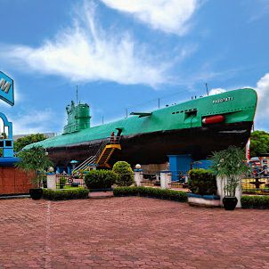
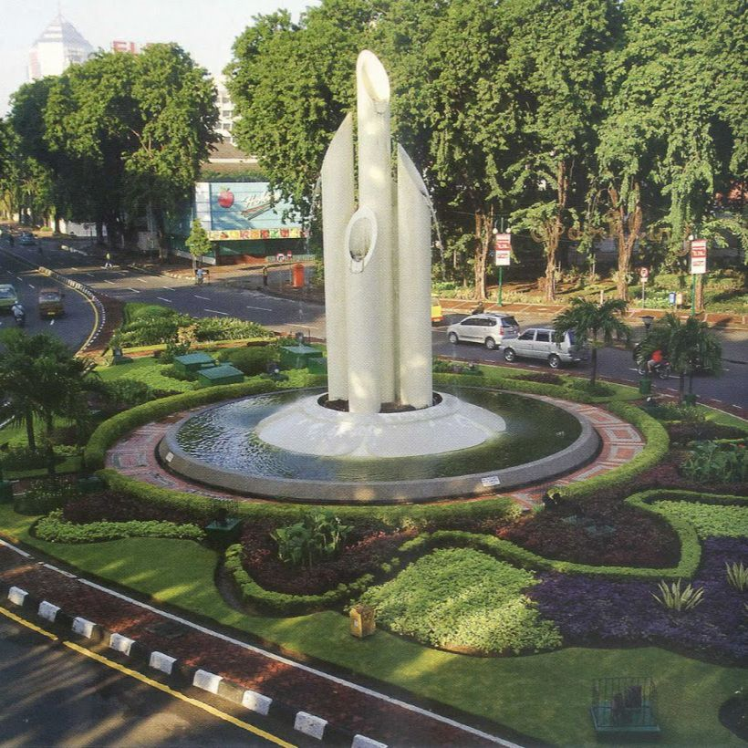
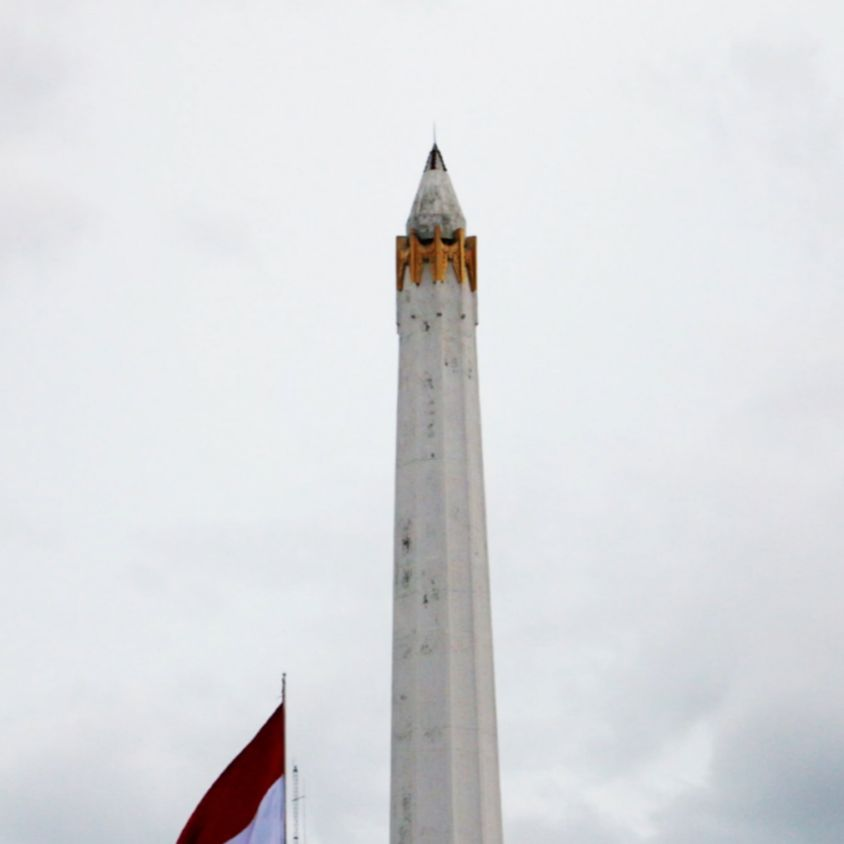
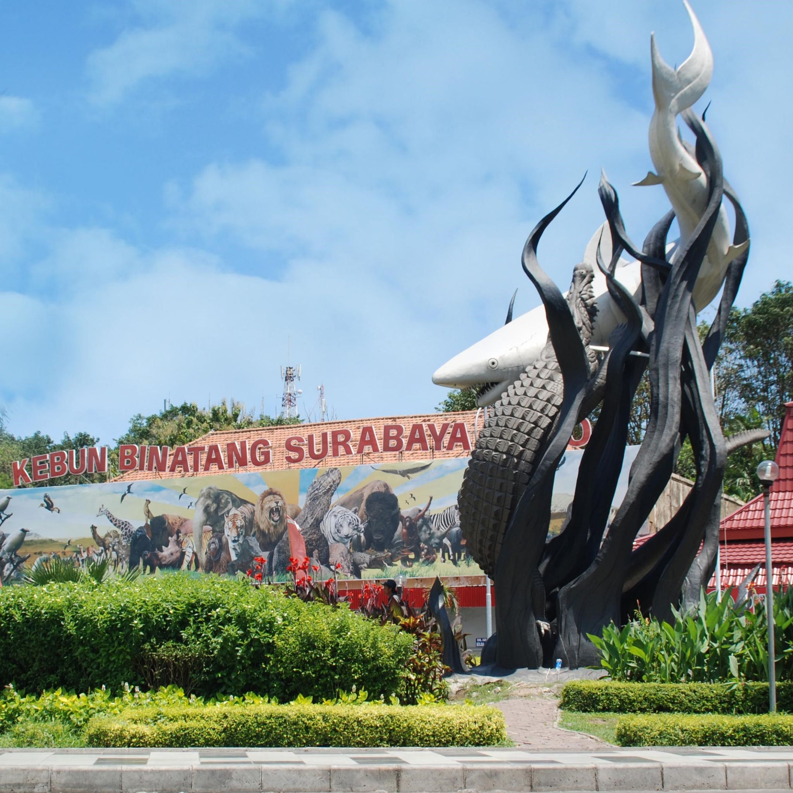

Profile
Hometown
Food
Home
Local Tourist
Some of the famous tourists in Surabaya

The Submarine Monument or also called Monkasel is one of a popular historical place in Surabaya. The submarine was brought to the land to be made into a monument to commemorate the courage of Indonesian heroes. You can visit this monument located on Jalan Pemuda, next to the Surabaya Plaza.

The Monument of Bambu Runcing shows the struggle of national heroes in the colonial era. At that time, the soldiers used a spear made of a sharpened bamboo to attack the opponent. Moreover, Monument of Bambu Runcing is located on Jalan Panglima Sudirman or at the heart of Surabaya.

One of the historical places in Surabaya is Tugu Pahlawan. This monument was built to honor the soldiers who died during a battle against the invaders who wanted to occupy the city on November 10, 1945. Tugu Pahlawan is located right in front of the Surabaya governor’s office, on Tembaan street.

Surabaya Zoo (Indonesian Kebon Binatang Surabaya or KBS), also known as Bonbin. KBS is the most comprehensive zoo in Southeast Asia, in which there are more than 981 different animal species consisting of more than 2,806 animals